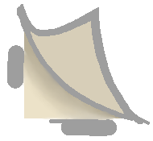

Fowl Play Café is a game for a 2-day DGA game jam where you mix drinks for customers as quickly as you can, using different bases and ingredients the drink to their liking. You can poison certain customers for a bonus, just don't get caught! I built the core game loop, programmed the customer backend and patron state logic, and implemented the UI/SFX. You can play the project on itch.io.
